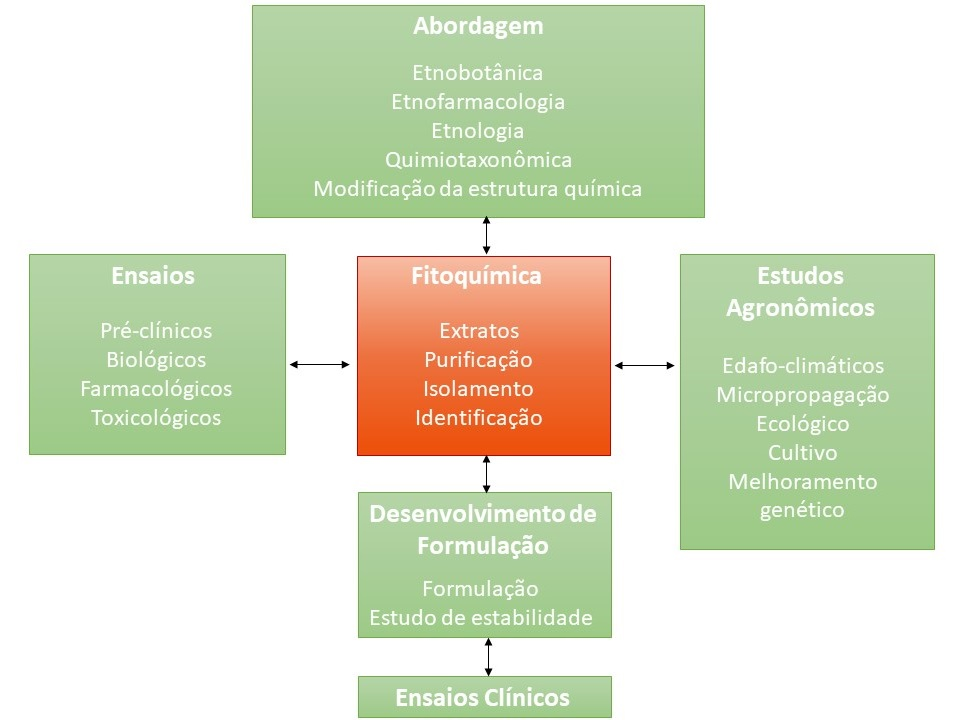
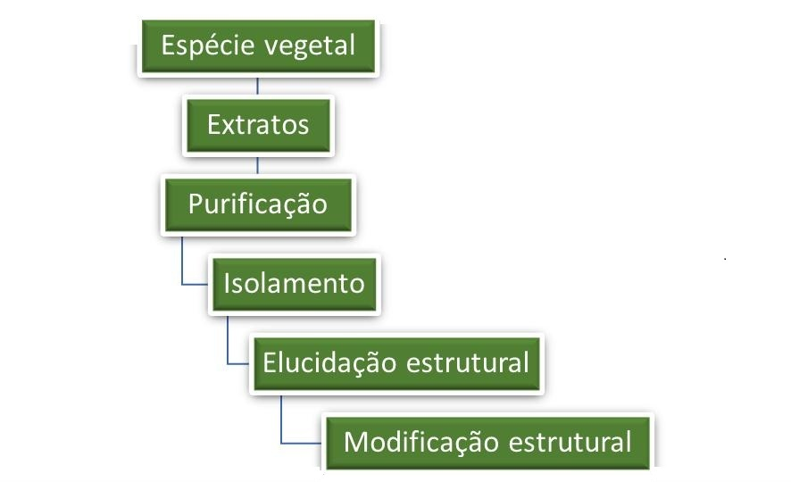

A partir da água, da luz solar, do gás carbônico, do oxigênio e dos minerais do solo a planta sintetiza os metabólitos primários e secundários.
-
 Os metabólitos primários são aqueles compostos
imprescindíveis ao desenvolvimento do vegetal, como as
proteínas, os ácidos graxos, os polissacarídeos e a
clorofila.
Os metabólitos primários são aqueles compostos
imprescindíveis ao desenvolvimento do vegetal, como as
proteínas, os ácidos graxos, os polissacarídeos e a
clorofila.
Os metabólitos secundários podem ou não estar presentes ou nos vegetais dependendo das variáveis ecológicas. A planta produz estes compostos para sobreviver e adaptar-se ao meio ambiente. Os metabólitos secundários são classificados de acordo com a sua natureza química em: ácidos orgânicos, saponinas, antraquinonas, flavonoides, alcaloides, óleos essenciais entre outros.
Estes compostos são isolados e identificados através
dos estudos fitoquímicos. Os compostos isolados podem ser
utilizados como marcadores para garantir a qualidade do
medicamento fitoterápico ou podem vir a ser um fitofármaco
ou ainda servir de modelo para a modificação estrutural. O
estudo do perfil fitoquímico de uma planta medicinal inicia
com a preparação de um extrato hidroalcoólico, também
conhecido como extrato bruto. A preparação do extrato bruto
é semelhante à preparação das tinturas preparadas na medicina tradicional.
Outras vezes, o estudo do perfil fitoquímico de uma planta
medicinal pode iniciar-se com a preparação de extratos de
polaridades diferentes como, por exemplo, os extratos
hexânico. Neste caso, são usados solventes com polaridade
crescente, que extraem compostos de grupos químicos
diferentes e com atividades biológicas e farmacológicas
diferentes. Como exemplo o acetato de etila extrai os
flavonoides, que podem apresentar atividade antioxidante e
anti-inflamatória.
Após a obtenção dos extratos é realizada a purificação cujo principal objetivo é o isolamento dos compostos ativos.
Para elucidar a estrutura química dos compostos isolados, estes são submetidos a diversos métodos espectrométricos e espectroscópicos. Na imagem abaixo vemos um espectrofotômetro, um equipamento essencial nesta fase de fitoquímica.

Uma vez conhecida a estrutura química, os compostos ativos,
podem ser submetidos a modificações estruturais com a
finalidade de aumentar a eficácia e a segurança.
Etapas essenciais da fitoquímica.

Fonte: BETTINA MONIKA RUPPELT (2018).
-
 Cechinel Filho e Yunes (1998) apresentam alguns
procedimentos experimentais que podem ser empregados para o
isolamento de compostos ativos de plantas medicinais.
Clique aqui
para ler o artigo "Estratégias para a obtenção de compostos
farmacologicamente ativos a partir de plantas
medicinais: conceitos sobre modificação estrutural para
otimização da atividade".
Cechinel Filho e Yunes (1998) apresentam alguns
procedimentos experimentais que podem ser empregados para o
isolamento de compostos ativos de plantas medicinais.
Clique aqui
para ler o artigo "Estratégias para a obtenção de compostos
farmacologicamente ativos a partir de plantas
medicinais: conceitos sobre modificação estrutural para
otimização da atividade".
Refere-se ao conjunto de práticas em Saúde desenvolvidas antes do que se classifica como medicina moderna (ou convencional) e que ainda hoje são praticadas por diversas culturas em todo o mundo.
Refere-se ao conjunto de práticas em Saúde desenvolvidas antes do que se classifica como medicina moderna (ou convencional) e que ainda hoje são praticadas por diversas culturas em todo o mundo.
{kind=link}